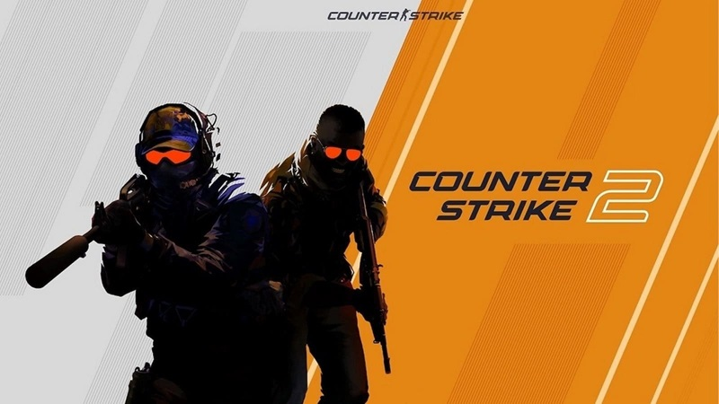
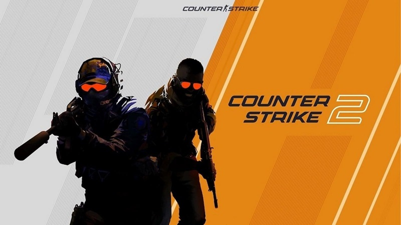
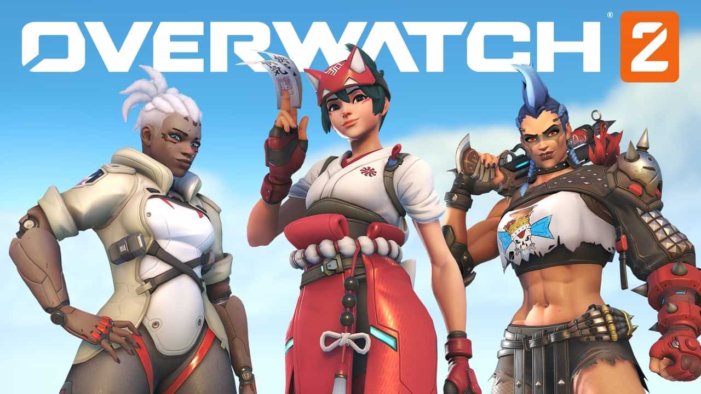
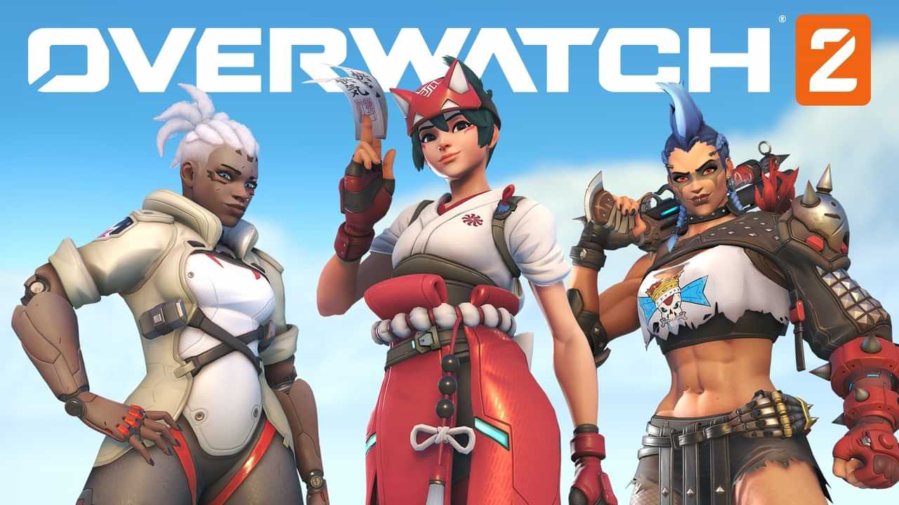

LEVEL UP YOUR
GAMING SKILLS
IMPROVE YOUR GAMING SKILLS NOW

 


 

LATEST UPDATE
There are many ways to improve in VALORANT, but some methods are more effective than others. Here are a few simple and effective ways to improve your gameplay.
PICKING A ROLE AND AGENTS
There are four different roles in VALORANT you can play: Sentinel, Initiator, Controller, and Duelist. While good gunplay is mandatory across all roles, each one also requires a specific gameplay style. Finding which style fits your own is critical to getting better at the game. If you hate playing a Controller Agent, don't. You're not going to play as well as you can if you really want to play an Initiator instead. Here’s a quick rundown of each role and its basic playstyle:
- Sentinel: Agents that excel at holding down areas by themselves, often with traps that alert them about enemy flankers.
- Initiator: Agents who help their team gather information and enter sites through utility and flashes.
- Controller: Agents who take control of areas of the map using their abilities, usually smokes and walls, to force the enemy into unfavorable positions.
- Duelist: Agents who enter sites first (with the help of Initiators) to create room for their team and seek out early duels with the enemy.
Try out each of the roles and start figuring out what you gravitate towards. Find two roles that you enjoy playing and start finding your main Agents to play in those roles. After that, just keep grinding with those, changing roles whenever the team comp calls for it.
MAP KNOWLEDGE
Knowing the map you're playing on is going to be a critical part of getting better at VALORANT. It doesn't mean you have to pull up the map and study it, but it does mean you need to pay attention when you're unfamiliar with a map. Part of knowing a map is knowing the various callouts players will use on that map. All maps will have callouts for things like “A Main, B Short, B Long, Heaven, Hell, and Link,” but many maps have callouts based solely on that map. Below are a few examples of map-specific callouts. Knowing these callouts will help you respond to callouts from your teammates during a round.
Areas like Hookah, Art, and Tree get callout names because it’s one of the most efficient ways to relay enemy positions in a short period of time. While the developers may put a specific name on the map for an area, oftentimes the community name will stick. For example, Hookah is officially named Window on the mini-map, but everyone says Hookah due to an earlier version of the map having hookahs there. Many others get their names from a defining characteristic of that specific area that is easily recognizable.
Part of improving is learning these callouts because they are important parts of the map that you will be dealing with every round. Hookah is the shortest route for attackers to take on their way to B Site from spawn and there will often be firefights there. Likewise, Tree is one of the two ways to get onto Ascent’s A site that is often used by defenders trying to retake a site. Understanding what your teammate means when they say “2 Tree” or “They’re pushing Art” is vitally important to improving your game.
As you continue playing, you’ll also start learning more about planting the Spike and the best spots to plant for your specific situations. Sometimes the default plant isn’t the best option. If you’re low on health with an Odin, you might prefer to plant the Spike in a spot where you can shoot at it safely through the wall when the enemy tries to defuse it.
CROSSHAIR PLACEMENT
As we said earlier, good gunplay is the most important thing in VALORANT. So, if your crosshair is always in a bad position, you’re going to struggle to get better and rank up. We define good crosshair placement by looking at two main points:
- Aim at head level.
- Aim at where the enemy is likely to be.